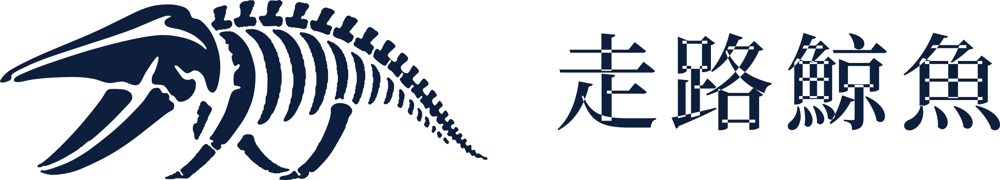
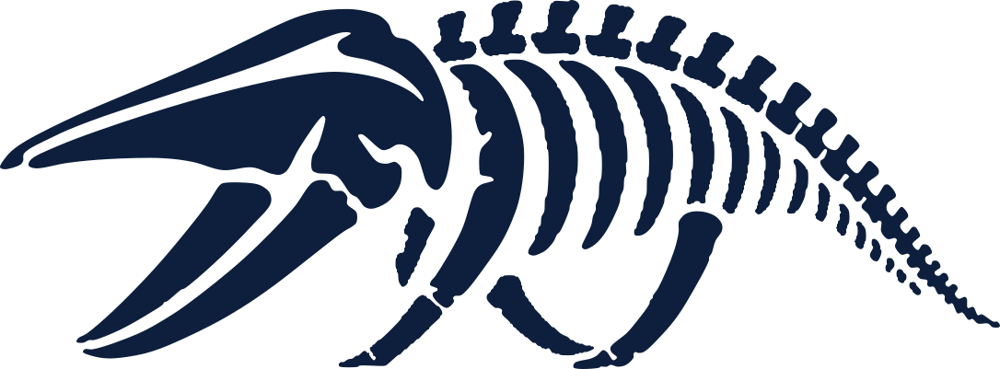
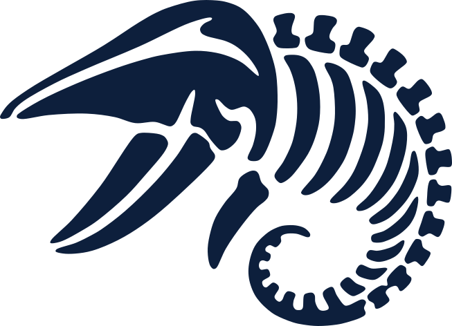

Walking Whale Design System v0.1
色彩與字體
這一頁直接使用 dist/ww.css 渲染，所有數值都來自 tokens。中英欄位各自標上 lang，排版 token 會依語言自動切換。
Logo
Wordmark、標誌與 icon
規格見 foundations/logo.md。檔案由 tools/logo/build_logo.py 產生。



色彩
色盤
#FBFAF6Primary page background.#FFFFFFCards, tables, high-clarity surfaces.#F7F4EEAlternate section wash.#E8E0D0Warm paper tone for editorial emphasis panels.#0D1F3CPrimary brand color: headlines, body text, logo, deep fields.#12345CCompanion to Abyss for gradients and raised dark surfaces.#2E5F7ASecondary brand color: secondary text, supporting blocks, info.#A8C5D6Light information fills: diagrams, data fields. Never text on light backgrounds.#C8B99ADecorative lines, dividers, rule accents. Never text on light backgrounds.#6DBFA0Sparse signal accent. A fill behind Abyss text, or an accent on dark fields. Never text or a sole indicator on light backgrounds.#2F7A60Biolum dark enough for text and focus rings on light backgrounds (DR-011).#A05138Fossil-clay warning text.#A8352ADanger and error text.#546174Muted neutral text: Abyss at 70% over Pearl, made solid so contrast holds on every light surface including Sediment.#868F9ENeutral for control borders that must reach 3:1 (Abyss at 50% over White).{COLOR.BIOLUM-INK}Focus ring on light and dark backgrounds.- Abyss 搭配 Pearl 或 White 是預設組合；Abyss 搭配 Sediment 是較溫暖的編輯感組合。
- Bone、Surface、Biolum 在淺色背景上都不能當文字，Biolum 也不能當唯一的狀態指示。
- Biolum 只用在兩個地方：Abyss 文字底下的填色，或深色背景上的強調。每個畫面最多一個 Biolum 行動按鈕。
- 需要綠色文字或 focus ring 時用 biolum-ink；需要次要文字時用 slate。
無障礙
允許的色彩組合
以下是系統允許的全部組合，CI 會逐一檢查。不在表上的組合不允許使用。
| 樣本 | 前景 | 背景 | 類型 | 對比 | 門檻 |
|---|---|---|---|---|---|
| Aa 鯨 | color.text.primary | color.background.page | 文字 | 15.72:1 | 4.5:1 |
| Aa 鯨 | color.text.primary | color.background.card | 文字 | 16.42:1 | 4.5:1 |
| Aa 鯨 | color.text.primary | color.background.wash | 文字 | 14.96:1 | 4.5:1 |
| Aa 鯨 | color.text.primary | color.background.warm | 文字 | 12.51:1 | 4.5:1 |
| Aa 鯨 | color.text.secondary | color.background.page | 文字 | 6.62:1 | 4.5:1 |
| Aa 鯨 | color.text.secondary | color.background.card | 文字 | 6.92:1 | 4.5:1 |
| Aa 鯨 | color.text.secondary | color.background.wash | 文字 | 6.30:1 | 4.5:1 |
| Aa 鯨 | color.text.secondary | color.background.warm | 文字 | 5.27:1 | 4.5:1 |
| Aa 鯨 | color.text.muted | color.background.page | 文字 | 6.02:1 | 4.5:1 |
| Aa 鯨 | color.text.muted | color.background.card | 文字 | 6.28:1 | 4.5:1 |
| Aa 鯨 | color.text.muted | color.background.wash | 文字 | 5.72:1 | 4.5:1 |
| Aa 鯨 | color.text.muted | color.background.warm | 文字 | 4.79:1 | 4.5:1 |
| Aa 鯨 | color.text.accent | color.background.page | 文字 | 4.93:1 | 4.5:1 |
| Aa 鯨 | color.text.accent | color.background.card | 文字 | 5.15:1 | 4.5:1 |
| Aa 鯨 | color.text.accent | color.background.wash | 文字 | 4.69:1 | 4.5:1 |
| Aa 鯨 | color.text.emphasis | color.background.page | 文字 | 6.62:1 | 4.5:1 |
| Aa 鯨 | color.text.emphasis | color.background.card | 文字 | 6.92:1 | 4.5:1 |
| Aa 鯨 | color.text.emphasis | color.background.wash | 文字 | 6.30:1 | 4.5:1 |
| Aa 鯨 | color.text.emphasis | color.background.warm | 文字 | 5.27:1 | 4.5:1 |
| Aa 鯨 | color.status.warning | color.background.page | 文字 | 5.39:1 | 4.5:1 |
| Aa 鯨 | color.status.warning | color.background.card | 文字 | 5.63:1 | 4.5:1 |
| Aa 鯨 | color.status.warning | color.background.wash | 文字 | 5.13:1 | 4.5:1 |
| Aa 鯨 | color.status.danger | color.background.page | 文字 | 6.26:1 | 4.5:1 |
| Aa 鯨 | color.status.danger | color.background.card | 文字 | 6.54:1 | 4.5:1 |
| Aa 鯨 | color.status.danger | color.background.wash | 文字 | 5.96:1 | 4.5:1 |
| Aa 鯨 | color.status.danger | color.background.warm | 文字 | 4.98:1 | 4.5:1 |
| Aa 鯨 | color.status.success | color.status.success-wash | 文字 | 4.54:1 | 4.5:1 |
| Aa 鯨 | color.status.warning | color.status.warning-wash | 文字 | 4.67:1 | 4.5:1 |
| Aa 鯨 | color.status.danger | color.status.danger-wash | 文字 | 5.36:1 | 4.5:1 |
| Aa 鯨 | color.status.info | color.status.info-wash | 文字 | 5.96:1 | 4.5:1 |
| Aa 鯨 | color.text.primary | color.status.success-wash | 文字 | 14.49:1 | 4.5:1 |
| Aa 鯨 | color.text.primary | color.status.warning-wash | 文字 | 13.62:1 | 4.5:1 |
| Aa 鯨 | color.text.primary | color.status.danger-wash | 文字 | 13.46:1 | 4.5:1 |
| Aa 鯨 | color.text.primary | color.status.info-wash | 文字 | 14.16:1 | 4.5:1 |
| Aa 鯨 | color.text.on-dark | color.background.deep | 文字 | 15.72:1 | 4.5:1 |
| Aa 鯨 | color.text.on-dark | color.background.deep-raised | 文字 | 12.02:1 | 4.5:1 |
| Aa 鯨 | color.text.on-dark-secondary | color.background.deep | 文字 | 9.09:1 | 4.5:1 |
| Aa 鯨 | color.text.on-dark-label | color.background.deep | 文字 | 8.49:1 | 4.5:1 |
| Aa 鯨 | color.text.on-signal | color.background.signal | 文字 | 7.51:1 | 4.5:1 |
| Aa 鯨 | color.border.control | color.background.page | 介面元件 | 3.12:1 | 3:1 |
| Aa 鯨 | color.border.control | color.background.card | 介面元件 | 3.26:1 | 3:1 |
| Aa 鯨 | color.focus | color.background.page | 介面元件 | 4.93:1 | 3:1 |
| Aa 鯨 | color.focus | color.background.card | 介面元件 | 5.15:1 | 3:1 |
| Aa 鯨 | color.focus | color.background.wash | 介面元件 | 4.69:1 | 3:1 |
| Aa 鯨 | color.focus | color.background.deep | 介面元件 | 3.18:1 | 3:1 |
| Aa 鯨 | color.chart.1 | color.background.page | 介面元件 | 5.62:1 | 3:1 |
| Aa 鯨 | color.chart.1 | color.background.card | 介面元件 | 5.87:1 | 3:1 |
| Aa 鯨 | color.chart.1 | color.background.wash | 介面元件 | 5.34:1 | 3:1 |
| Aa 鯨 | color.chart.2 | color.background.page | 介面元件 | 3.96:1 | 3:1 |
| Aa 鯨 | color.chart.2 | color.background.card | 介面元件 | 4.14:1 | 3:1 |
| Aa 鯨 | color.chart.2 | color.background.wash | 介面元件 | 3.77:1 | 3:1 |
| Aa 鯨 | color.chart.3 | color.background.page | 介面元件 | 4.69:1 | 3:1 |
| Aa 鯨 | color.chart.3 | color.background.card | 介面元件 | 4.90:1 | 3:1 |
| Aa 鯨 | color.chart.3 | color.background.wash | 介面元件 | 4.46:1 | 3:1 |
| Aa 鯨 | color.chart.4 | color.background.page | 介面元件 | 6.50:1 | 3:1 |
| Aa 鯨 | color.chart.4 | color.background.card | 介面元件 | 6.79:1 | 3:1 |
| Aa 鯨 | color.chart.4 | color.background.wash | 介面元件 | 6.18:1 | 3:1 |
| Aa 鯨 | color.chart.other | color.background.page | 介面元件 | 3.52:1 | 3:1 |
| Aa 鯨 | color.chart.other | color.background.card | 介面元件 | 3.67:1 | 3:1 |
| Aa 鯨 | color.chart.other | color.background.wash | 介面元件 | 3.35:1 | 3:1 |
| Aa 鯨 | color.chart.label | color.background.page | 文字 | 6.02:1 | 4.5:1 |
| Aa 鯨 | color.chart.label | color.background.card | 文字 | 6.28:1 | 4.5:1 |
| Aa 鯨 | color.chart.label | color.background.wash | 文字 | 5.72:1 | 4.5:1 |
| Aa 鯨 | color.index.done | color.background.page | 介面元件 | 6.62:1 | 3:1 |
| Aa 鯨 | color.index.done | color.background.card | 介面元件 | 6.92:1 | 3:1 |
| Aa 鯨 | color.index.done | color.background.wash | 介面元件 | 6.30:1 | 3:1 |
| Aa 鯨 | color.index.current | color.background.page | 介面元件 | 15.72:1 | 3:1 |
| Aa 鯨 | color.index.current | color.background.card | 介面元件 | 16.42:1 | 3:1 |
| Aa 鯨 | color.index.current | color.background.wash | 介面元件 | 14.96:1 | 3:1 |
| Aa 鯨 | color.index.on-dark-done | color.background.deep | 介面元件 | 7.51:1 | 3:1 |
| Aa 鯨 | color.index.on-dark-current | color.background.deep | 介面元件 | 15.72:1 | 3:1 |
字體
中英並排
左欄 lang="en"，右欄 lang="zh-Hant"。兩欄使用同一組 class，差異全部來自 tokens。
English
We work with people before we work on systems.
Custom AI and software systems
Structure. Voice. Motion.
How we begin
Meet, sense, shape
Custom AI and software systems for ambitious teams who think in years, not quarters.
Walking Whale is named after Pakicetus, the walking ancestor of whales. Every large system begins as an early form, and we start with the people who will live with it.
Founded in Taipei in September 2025, we build booking, membership, payments and AI agents that teams use every day.
What we do
--ww-color-text-primaryPrecise first
Quietly confident
Calm, declarative, never loud.
繁體中文
先與人同行，再著手系統
客製化 AI 與軟體系統
結構、語氣、動態
我們如何開始
相識、理解、成形
我們為以年為單位思考的團隊，打造客製化 AI 與軟體系統。
走路鯨魚的名字來自 Pakicetus，一種會走路的鯨魚祖先。所有大型系統都從一個早期的形態開始，所以我們先從會使用它的人開始。
我們 2025 年 9 月在台北成立，打造預約、會員、金流與 AI 客服，讓團隊每天都用得上。
我們做什麼
--ww-color-text-primary精準為先
安靜的自信
冷靜、明確，從不張揚。
驗收
中文排版檢查項目
對應範圍規格的驗收情境 2。請在 macOS Safari、iOS Safari、Windows Edge 各看一次。
系統從一個早期形態開始——然後慢慢長大
預約、會員、金流……都是同一套系統
她說：「這就是我們要的『安靜的自信』。」
走路鯨魚 Walking Whale 2025
為以年為單位思考的團隊，打造客製化 AI 與軟體系統
我們重視長期的合作關係，而不是一次性的交付。
Scientific in structure. Human in voice. Alive in motion.Tokens
字體 token 對照
右欄是 :lang(zh) 底下的值，與左欄相同時標示「同左」。
| Token | 英文與預設 | :lang(zh) |
|---|---|---|
--ww-font-family-display | "Cormorant Garamond", "Noto Serif TC", "Georgia", "Times New Roman", serif | "Noto Serif TC", "Songti TC", "PMingLiU", serif |
--ww-font-family-body | "Source Serif 4", "Noto Serif TC", "Georgia", serif | "Noto Serif TC", "Songti TC", "PMingLiU", serif |
--ww-font-family-ui | "Inter", "Noto Sans TC", system-ui, -apple-system, "Segoe UI", sans-serif | "Noto Sans TC", "PingFang TC", "Microsoft JhengHei", system-ui, sans-serif |
--ww-font-family-mono | "IBM Plex Mono", "Noto Sans TC", ui-monospace, "SFMono-Regular", "Menlo", monospace | 同左 |
--ww-font-family-kicker | "IBM Plex Mono", "Noto Sans TC", ui-monospace, "SFMono-Regular", "Menlo", monospace | "Noto Sans TC", "PingFang TC", "Microsoft JhengHei", system-ui, sans-serif |
--ww-font-weight-regular | 400 | 同左 |
--ww-font-weight-medium | 500 | 同左 |
--ww-font-weight-semibold | 600 | 同左 |
--ww-font-weight-bold | 700 | 同左 |
--ww-font-weight-display | 500 | 同左 |
--ww-font-weight-heading | 600 | 同左 |
--ww-font-weight-emphasis | 500 | 700 |
--ww-font-style-emphasis | italic | normal |
--ww-font-size-hero | clamp(2.6rem, 7vw, 4.6rem) | 同左 |
--ww-font-size-h1 | clamp(2rem, 5vw, 3rem) | 同左 |
--ww-font-size-h2 | clamp(1.6rem, 4vw, 2.2rem) | 同左 |
--ww-font-size-h3 | 1.5rem | 同左 |
--ww-font-size-h4 | 1.25rem | 同左 |
--ww-font-size-lede | clamp(1.0625rem, 2vw, 1.25rem) | 同左 |
--ww-font-size-body | 1.0625rem | 同左 |
--ww-font-size-ui | 0.9375rem | 同左 |
--ww-font-size-sm | 0.8125rem | 同左 |
--ww-font-size-kicker | 0.75rem | 0.8125rem |
--ww-font-transform-kicker | uppercase | none |
--ww-line-height-display | 1 | 1.25 |
--ww-line-height-heading | 1.15 | 1.35 |
--ww-line-height-lede | 1.35 | 1.6 |
--ww-line-height-body | 1.62 | 1.85 |
--ww-line-height-ui | 1.4 | 1.6 |
--ww-letter-spacing-display | -0.03em | 0.04em |
--ww-letter-spacing-heading | -0.01em | 0.04em |
--ww-letter-spacing-body | 0em | 0.02em |
--ww-letter-spacing-ui | 0em | 0.02em |
--ww-letter-spacing-kicker | 0.1em | 0.12em |
--ww-letter-spacing-label | 0.08em | 0.04em |